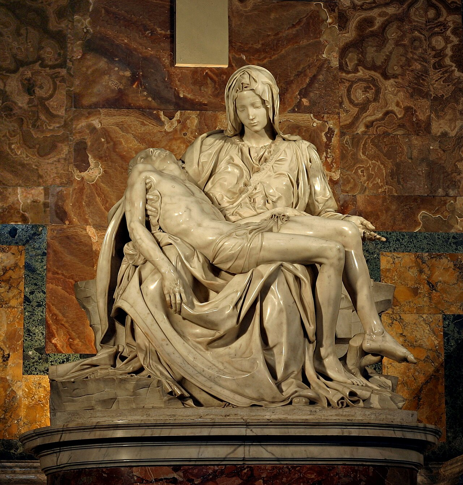
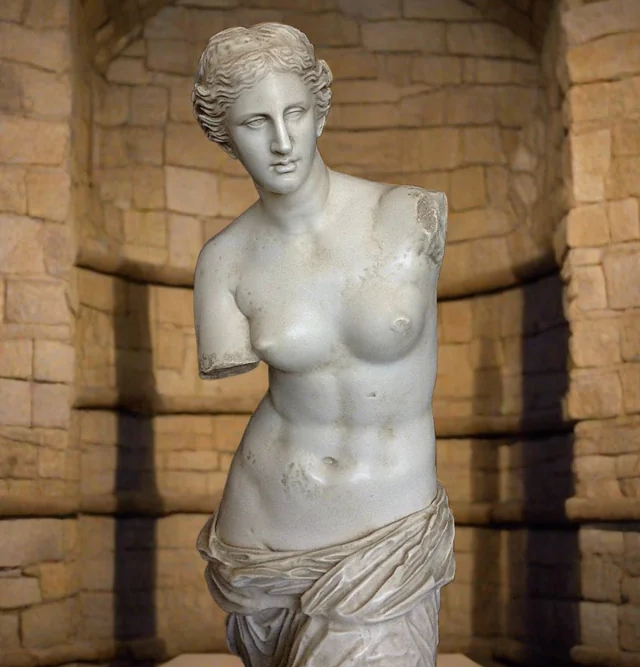

La Piedad

Es una obra escultórica en mármol de Carrara realizado por Miguel Ángel entre 1498 y 1499. Sus dimensiones son 1,74 por 1,95 m. Se encuentra en la Ciudad del Vaticano. Representa el ideal de belleza del renacimiento.
La Venus de Milo

Es una famosa estatua griega antigua, el periodo helenístico y el Museo del Louvre. Representa a Afrodita, la diosa del amor y la belleza.
Apolo y Dafne

Es una escultura realizada por el italiano Gian Lorenzo Bernini entre los años 1622 y 1625. Pertenece al estilo barroco. Se trata de un grupo escultórico de mármol y de tamaño natural expuesto en la Galería Borghese.